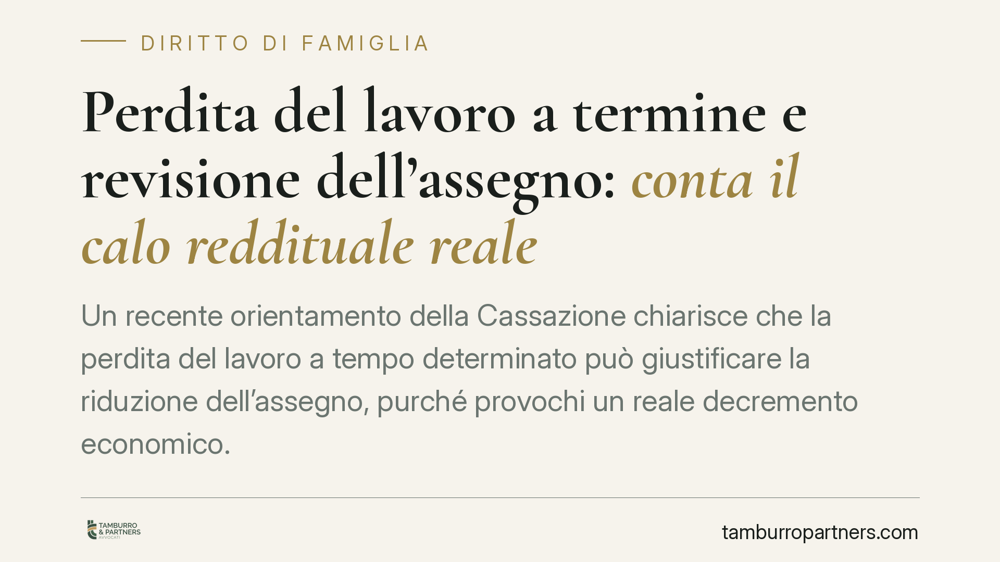

Perdita del lavoro a termine e revisione dell'assegno: conta il calo reddituale reale
Un recente orientamento della Cassazione chiarisce che la perdita del lavoro a tempo determinato può giustificare la riduzione dell'assegno, purché provochi un reale decremento economico. Non rileva la natura o la prevedibilità del contratto a termine, ma l'effettivo peggioramento delle condizioni patrimoniali rispetto al momento dell'accordo originario. Un principio che incide su molti procedimenti di revisione.

Il fatto
Un recente orientamento della Corte di Cassazione è tornato sul tema della revisione dell'assegno quando l'obbligato perde il lavoro. Il punto controverso riguardava un rapporto a tempo determinato, già scaduto secondo quanto previsto dal contratto.
La tesi respinta era questa: se il contratto aveva una scadenza prevedibile, la sua cessazione non sarebbe un fatto nuovo idoneo a giustificare la riduzione dell'assegno. La Corte ha disatteso questa impostazione. Ciò che conta non è la natura del contratto né la prevedibilità della scadenza, ma se la cessazione del rapporto abbia prodotto un calo reddituale effettivo.
Inquadramento normativo
Occorre distinguere due istituti spesso confusi, perché hanno presupposti diversi.
L'assegno di mantenimento in sede di separazione trova base nell'art. 156 c.c. ed è legato al tenore di vita e alla capacità economica dei coniugi. L'assegno divorzile è regolato dall'art. 5 della L. 898/1970 e, dopo la nota pronuncia delle Sezioni Unite (Cass. SU n. 18287/2018), ha natura composita: assistenziale, compensativa e perequativa. Tiene conto cioè del contributo dato dall'ex coniuge alla vita familiare e del sacrificio delle proprie aspettative professionali.
La differenza non è teorica. Un calo reddituale incide in modo immediato sulla componente legata alla capacità economica, ma la componente compensativa dell'assegno divorzile può conservare una propria autonomia. La revisione, in entrambi i casi, presuppone un mutamento sopravvenuto delle condizioni accertate al momento dell'omologa o della sentenza.
Il criterio decisivo resta il confronto puntuale tra la capacità economica fotografata nel provvedimento originario e quella attuale. Non basta allegare un evento sfavorevole: occorre dimostrare che quell'evento ha modificato in concreto il quadro patrimoniale.
Il discrimine: decremento reale o depauperamento volontario
La distinzione centrale è tra decremento effettivo e depauperamento colpevole o strumentale.
Chi perde un lavoro a termine e non trova una nuova occupazione, pur essendosi attivato, subisce un calo reale. Chi invece rifiuta offerte adeguate, riduce volontariamente la propria attività o organizza la propria situazione per apparire più povero, non può invocare la revisione. In quest'ultimo caso il giudice valuta la capacità economica potenziale, non quella artificiosamente dichiarata.
Qui entra in gioco la consulenza tecnica d'ufficio (CTU), strumento con cui il giudice affida a un esperto la ricostruzione analitica della situazione patrimoniale delle parti. La CTU consente di verificare redditi, conti, movimenti e tenore di vita, superando le autodichiarazioni e dando concretezza al confronto tra passato e presente.
Implicazioni pratiche
Per chi versa l'assegno, la pronuncia conferma che la perdita del lavoro a termine non è di per sé un ostacolo alla revisione: ciò che pesa è il risultato economico effettivo. Resta però l'onere, rigoroso, di provare il calo e la propria diligenza nella ricerca di nuova occupazione.
Per chi riceve l'assegno, l'indicazione è speculare: una generica allegazione di difficoltà non basta a ridurre quanto stabilito. È legittimo contestare che la cessazione del rapporto corrisponda a un reale impoverimento o che l'obbligato si sia attivato come avrebbe dovuto.
Cosa fare in concreto
- Documenta il calo reddituale con dichiarazioni dei redditi, CU, buste paga e prova della cessazione del rapporto, confrontandole con la situazione esistente all'epoca del provvedimento.
- Conserva le prove della ricerca di lavoro: candidature, colloqui, iscrizioni ai centri per l'impiego, eventuali rifiuti giustificati di offerte inadeguate.
- Verifica quale istituto è in gioco — mantenimento da separazione o assegno divorzile — perché la componente compensativa può incidere sull'esito.
- Valuta la solidità della posizione e la completezza della documentazione prima di avviare il giudizio di revisione, per evitare richieste destinate al rigetto.
- Prepara la fase istruttoria tenendo conto che una CTU potrà ricostruire in dettaglio il quadro patrimoniale: la trasparenza dei dati è a vantaggio di chi agisce in buona fede.
In sintesi
Il messaggio è lineare: non è la forma del contratto a decidere, ma la sostanza economica. La revisione segue il reddito reale, non le etichette.
---
*Contributo informativo a cura di Tamburro & Partners - Avv. Giuseppe Tamburro. Non costituisce parere legale.*
Ogni famiglia ha il suo equilibrio.
Separazione, divorzio, affidamento, assegno: se vuoi un confronto riservato su una specifica situazione, scrivi allo studio. Ti rispondiamo entro un giorno lavorativo.